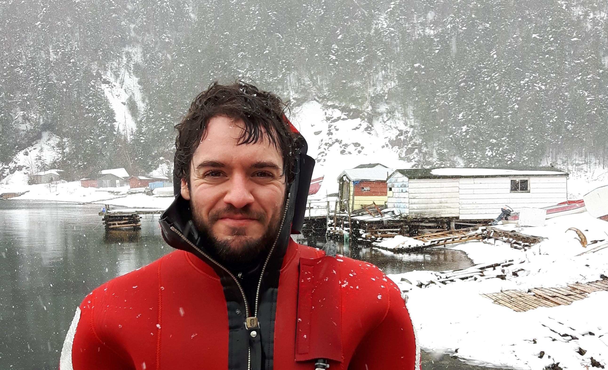

|  |
Frédéric Cyr | PhDResearch ScientistCentre for Fisheries and Ecosystem Research,
|
Research interests: |
|
I am an observational oceanographer interested in the role of the ocean in the Earth's climate system, from the smallest scales of turbulence to the slow drivers of ocean variability occurring at decadal time scales.
My research program is sustained by three main pillars:
1) Tracking contemporary environmental changes;
2) Understanding physical-biogeochemical interactions in the oceans; and
3) Incorporating environmental knowledge into ecosystem management.
Before I joined CFER in January 2025, I worked for 8 years for the Department of Fisheries and Oceans Canada (DFO). |
Education: |
| PhD (2014) | Institut des sciences de la mer de Rimouski, Université du Québec à Rimouski
(ISMER/UQAR), Rimouski (Qc), Canada. Oceanography |
| MSc (2008) | Université de Versailles Saint-Quentin-en-Yvelines,
Saclay, France. Interactions Climate-Environment |
| MSc (2008) | ENSTA-Paristech, Paris, France. Engineering - ocean sciences |
| BEng (2009) | École Polytechnique de Montréal,
Montréal (Qc), Canada. Engineering physics |
Past research positions: |
| [2017-2025] | Fisheries and Oceans Canada (DFO),
St. John's, NL, Canada. Lead author for the Atlantic Zone Monitoring Program (AZMP) |
| [2016-2017] | Mediterranean Institute of Oceanography(MIO),
Marseille, France. 1-year postdoc on EU project NeXOS Development of a new sensor for glider measurements of dissolved organic matter |
| [2014-2015] | Royal Netherlands Institute for Sea Research (NIOZ),
Den Burg, Netherlands. 2-year FRQNT postodoctoral fellowship Internal waves and ocean mixing |